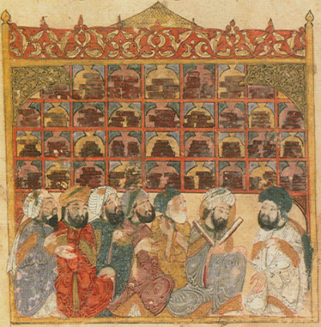

Diplômée de la Faculté de Traduction et d’Interprétation de Mons, en Belgique, en 2010, j’ai travaillé sept ans au sein d’une ONG espagnole en tant que traductrice et éditrice web.
En 2018, je décide de devenir traductrice indépendante.
Mes expériences professionnelles et personnelles m’ont permis d’acquérir de solides connaissances dans les domaines suivants : droit pénal international, droit humanitaire, droits civils, relations internationales, histoire du droit, histoire occidentale et latino-américaine, écologie, agriculture.

Je traduis vos documents depuis l’anglais et l’espagnol vers le français : sites web, articles ...
Contactez-moi pour obtenir un devis gratuit !
Tarifs attractifs pour les corrections de mémoires d’étudiants.
Je travaille pour l’instant depuis la Belgique.
Charline Doutreloux
Téléphone : +32 497 69 11 11
Courriel : cdoutreloux@gmail.com
Rue de la chapelle, 45
5550 Vresse
Belgique
Numéro TVA : XXXX